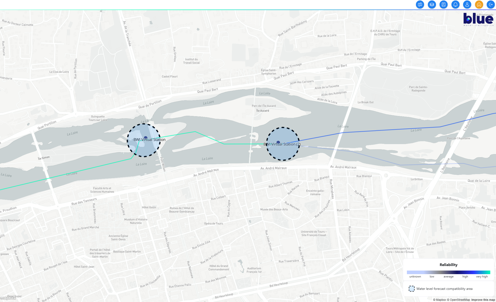
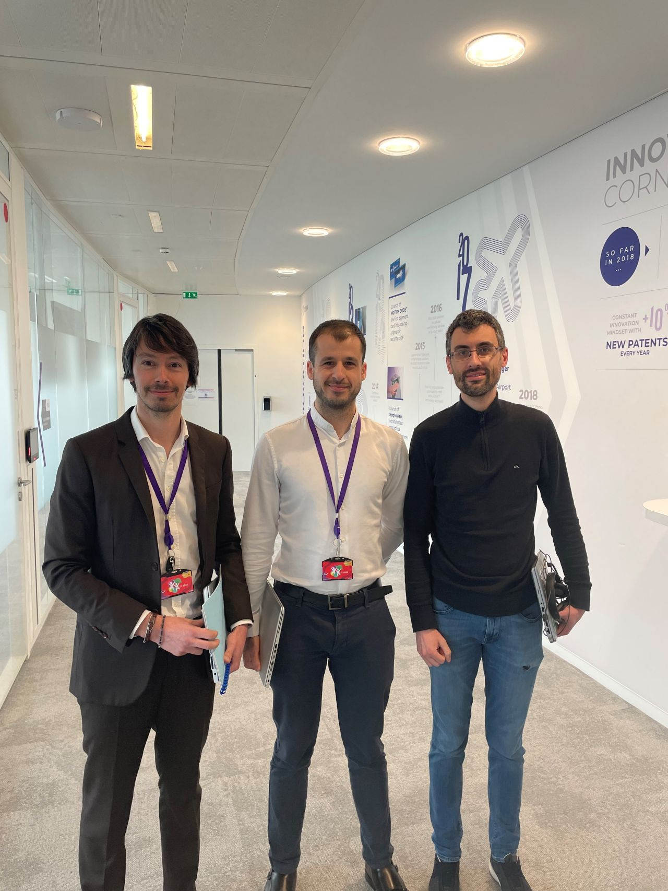
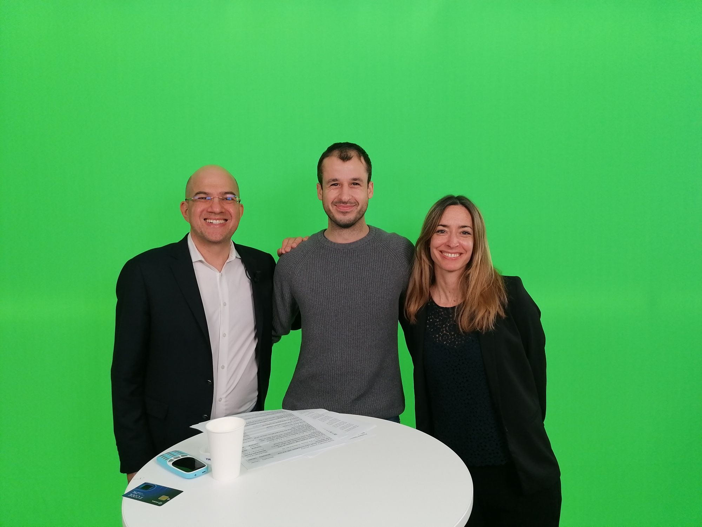
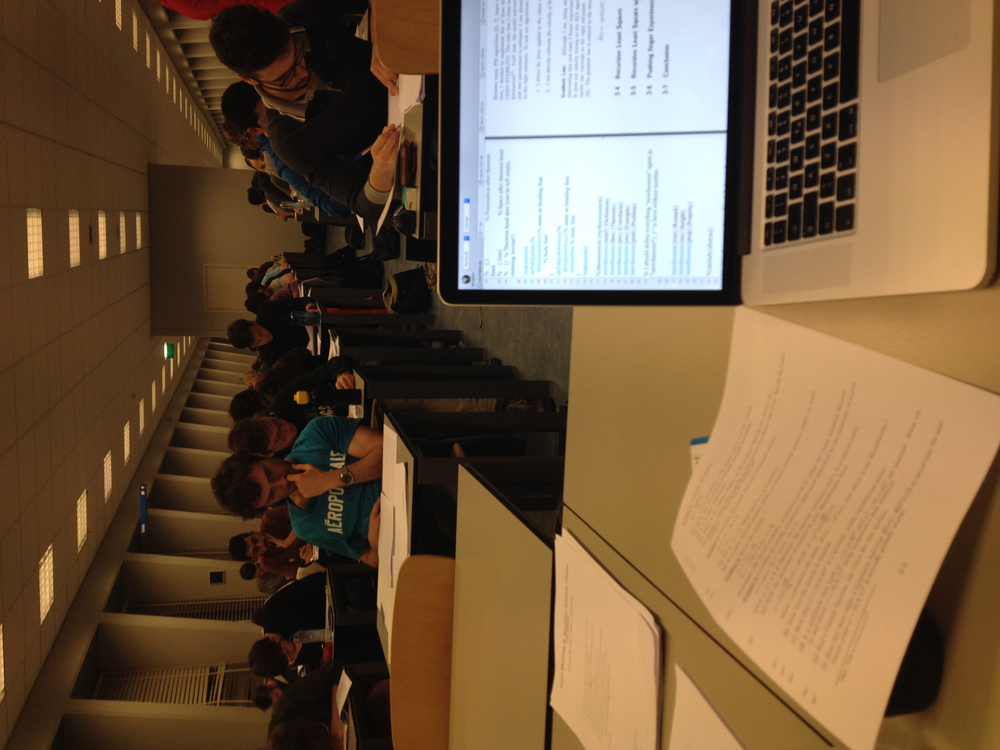
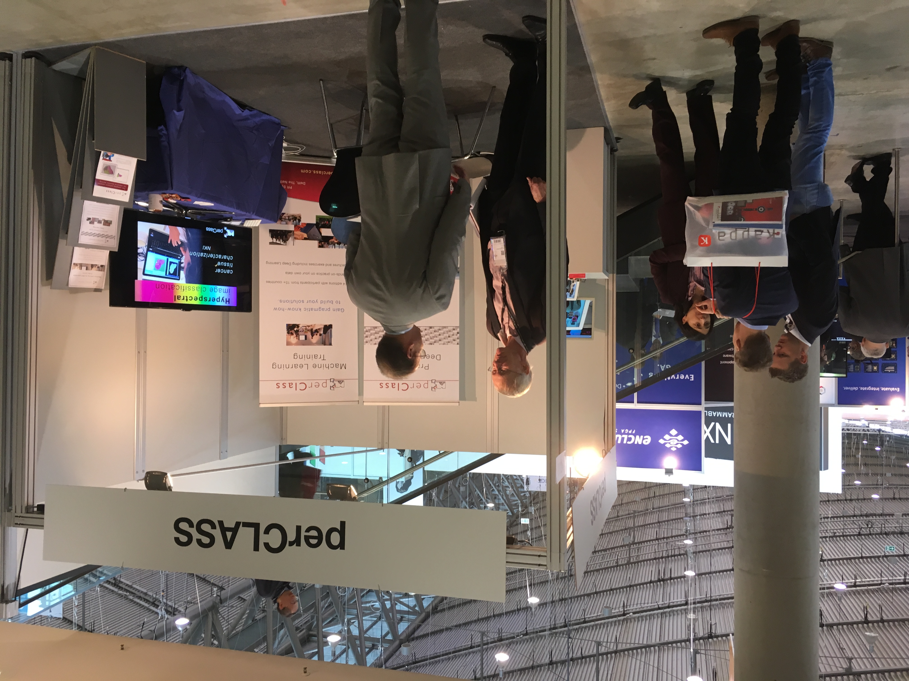

Product Owner with 5 years of experience delivering B2B software and technical products in international environments. Experienced in product strategy, roadmap ownership, cross-functional leadership and translating customer needs into scalable technical solutions. Strong engineering and data background, bridging customers, business and R&D teams. Based in Paris and open to relocation. Connect with me on LinkedIn.
Selected product, innovation and engineering projects from my experience.

Product Owner for the BWI hydrological platform , a B2B SaaS product providing river discharge and water-level monitoring and forecasting capabilities. I own the product roadmap and backlog, translating customer and business needs into scalable product features while balancing technical constraints and R&D capacity.
I coordinate a 14-person cross-functional team across software development, hydrological modelling, data, satellite image processing and DevOps, managing the product lifecycle from discovery and prioritization through validation and release.
Owned the roadmap and lifecycle of CPS, a software product supporting the personalization of more than 1 million payment and identity cards annually. Coordinated a technical team and global stakeholders across France and Asia, while reducing software provisioning time onto card chips by 75%.

Led the winning IDEMIA Innovathon project and developed an industrial approach designed to reduce the environmental impact of chip-card production by up to 80% (Post).

Led a CBDC innovation project with ConsenSys, coordinating an international multidisciplinary team for the Monetary Authority of Singapore Global CBDC Challenge (Post).

Coached students on LaTeX and technical writing (Video). Prepared and Evaluated Control Theory Exams. Improved communication and mentoring skills

Improved a machine-learning classifier for spectral imaging and presented the solution at international trade fairs in Munich and Eindhoven (Video).